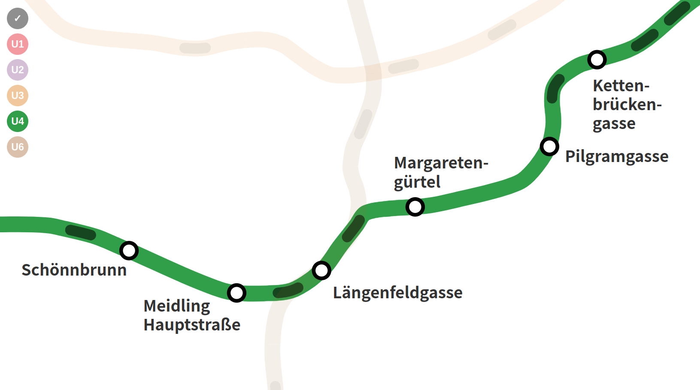

EN
FR DE
live underground vienna
Visualizing the viennese U-Bahn network
This project gives a live overview of the viennese metro network. It is developped using HTML, CSS and JS only. We explore the basics of SVG to animate all individual trains. The animation is trigered using an API connection to the city server (one request every 30sec). Using a simple algorithm we interpolate the time of departure of each train based on the API response.
The OGD (Open Government Data) policy of Austria makes a variety of datasets available. We focused on Vienna public transportation. Wiener Linien publishes live updates of their network using an open access API. We created a live metro map of Vienna as an interface of this API to apprehend public transportation schedules. We used adapted design strategies and animations to effectively communicate the raw information we get from the API.